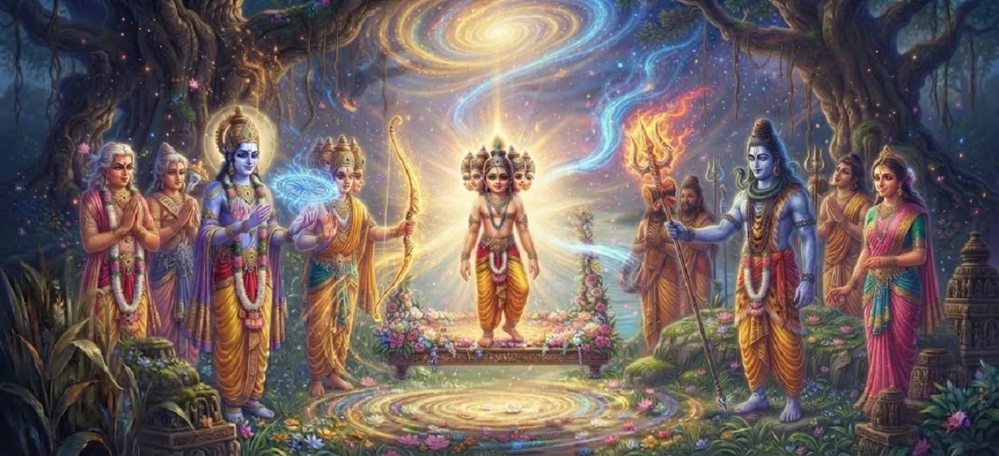

Kumāra Receives Divine Weapons
Chapter 19 of the Kumara Khanda narrates the glorious and sacred ceremony where young Kumara is ceremoniously bestowed with powerful celestial weapons and armaments by the deities in Saravana.
As each god steps forward to offer their most cherished divine implement, the young warrior is fully equipped to lead the cosmic forces into the ultimate battle against darkness.
Chapter 19 Highlights & Full Overview
Celestial Armaments
Bestowing powerful divine weapons upon young Skanda.
Gods' Offerings
Each deity presenting their ultimate sacred implement.
Radiant Bestowal
Weapons glowing with intense spiritual and martial energy.
Arming the Savior
Preparing the supreme commander for the impending war.
Unified Trust
Pooling cosmic power into a single invincible leader.
Path to Command
Setting the final stage for his formal coronation as commander.
Core Topics Detailed in This Chapter
- 01The Assembly Prepares for the Weapon Bestowal→
- 02Indra and Agni Offer Their Supreme Armaments→
- 03Gifts from Brahma, Vishnu, and Lord Shiva→
- 04Contribution of Weapons by Guardian Deities→
- 05Kumara’s Gracious Acceptance and Radiance→
- 06The Unified Power of the Celestial Armaments→
- 07Transition to Chapter 20 (Kumāra Appointed Commander of the Gods)→
1. The Assembly Prepares for the Weapon Bestowal
Having witnessed the extraordinary powers of young Kumara, the deities realize that individual divine weapons, when held by ordinary hands, were insufficient against Tarakasura. Under the counsel of Brahma, they resolve to pool their greatest armaments and place them directly into the hands of Skanda, transforming him into the ultimate repository of cosmic martial might.
2. Indra and Agni Offer Their Supreme Armaments
Indra, the king of the gods, steps forward first with immense reverence, presenting his legendary Vajra (thunderbolt), a weapon of absolute impenetrable force. Following him, Agni, Varuna, and other principal deities offer their specialized celestial weapons—each instrument gleaming with blinding energy and charged with sacred mantras to ensure total victory over the demonic forces.
3. Gifts from Brahma, Vishnu, and Lord Shiva
Lord Brahma bestows sacred spiritual weapons empowered by creation, while Lord Vishnu contributes powerful divine implements symbolizing preservation and cosmic order. Finally, elements representing the direct essence of Lord Shiva are fused into the armaments, ensuring that Kumara wields not merely physical weapons, but the absolute power of the trimurti combined.
4. Contribution of Weapons by Guardian Deities
The guardian deities of the various quarters—such as Kubera, Yama, and Surya—also step forward to offer their respective weapons and divine symbols. Each offering is accompanied by sacred chants and sincere prayers, transforming the tranquil reed grove of Saravana into a vibrant theater of divine consecration and martial preparation.
5. Kumara’s Gracious Acceptance and Radiance
With infinite grace and a radiant smile across his six faces, young Kumara accepts the vast array of celestial weapons. As his tender hands touch each divine implement, the weapons absorb his supreme aura, glowing even brighter and becoming attuned to his divine will. His form exudes an unmatched martial splendor that dazzles the eyes of all onlookers.
6. The Unified Power of the Celestial Armaments
The chapter emphasizes how the collection of separate celestial weapons in Kumara's hands symbolizes the unification of the entire cosmos against adharma (unrighteousness). No single deity could defeat Tarakasura alone, but by pooling their weapons and energy into Skanda, they create an irresistible, invincible force destined to triumph.
7. Transition to Chapter 20 (Kumāra Appointed Commander of the Gods)
Fully armed with the greatest celestial armaments of the universe and shining with unmatched brilliance, young Kumara stands completely prepared for his destiny. This sets the direct stage for Chapter 20: **Kumāra Appointed Commander of the Gods**, where he is formally and ceremoniously crowned as the supreme general of the heavenly armies.
Key Teachings and Spiritual Takeaways of Chapter 19
Collective Power
Uniting disparate spiritual forces creates invincible strength.
Divine Armaments
Weapons of light destroy the darkness of ignorance and evil.
Sacred Offerings
Surrendering one's best resources to the Lord brings ultimate victory.
Equipped for Duty
Divine mission requires both inner power and divine tools.
Radiant Consecration
Consecration elevates the warrior to cosmic status.
Impending Victory
Arming the savior signals the inevitable doom of adharma.
Spiritual Reflection
Chapter 19 teaches us that spiritual battle against inner and outer negativity requires the integration of all higher virtues and divine tools. When the gods pooled their weapons into Skanda, they demonstrated that true triumph comes through unity, surrender, and placing ultimate trust in the supreme leader.
Living the Message of Chapter 19
Arm your mind and soul with divine virtues like truth, courage, and devotion.
Cooperate and unite with fellow seekers in the pursuit of righteousness.
Surrender your ego and best capabilities to the service of the Divine.
Key Spiritual Concepts
Divyastra-Pradana
The ceremonial bestowing of celestial weapons by the gods.
Vajra-Samanvita
Equipping Skanda with the impenetrable thunderbolt and divine arms.
Shakti-Sambhava
The convergence of all divine energies into a single leader.
Ayudha-Prakasha
The radiant glow of divine weapons in the hands of Kumara.
Deva-Sankalpa
The collective resolve of the heavenly host for victory.
Vijaya-Sajjikarana
Total preparation and arming for the final war against evil.
The ceremonial bestowing of celestial weapons by the gods.
Equipping Skanda with the impenetrable thunderbolt and divine arms.
The convergence of all divine energies into a single leader.
The radiant glow of divine weapons in the hands of Kumara.
The collective resolve of the heavenly host for victory.
Total preparation and arming for the final war against evil.
Chapter Summary
Kumara Khanda Chapter 19 describes the sacred ceremony in which Brahma, Indra, and the assembled deities pool their powerful celestial weapons and armaments, bestowing them upon young Kumara to equip him fully for the decisive war against Tarakasura.
Frequently Asked Questions
1. What is the detailed focus of Kumara Khanda Chapter 19?
Chapter 19 focuses on the grand and sacred ceremony in which various deities and celestial beings present young Kumara with their most potent divine weapons and armaments for the upcoming war.
2. Why do the gods present weapons to young Kumara?
The gods present their weapons to pool their celestial energies and arm their supreme savior for the decisive battle against the demon Tarakasura.
3. What significance do these celestial armaments hold?
They represent the collective power, trust, and blessing of the entire cosmos vested in Lord Skanda to restore righteousness.
4. What chapter follows Chapter 19?
The next chapter is Chapter 20, titled 'Kumāra Appointed Commander of the Gods'.
“Pooling their supreme celestial armaments into the hands of young Skanda, the gods created an invincible weapon of cosmic restoration.”
Continue Through Kumara Khanda
Chapter 19 details the bestowal of divine weapons. Continue to the next chapter, Kumāra Appointed Commander of the Gods.